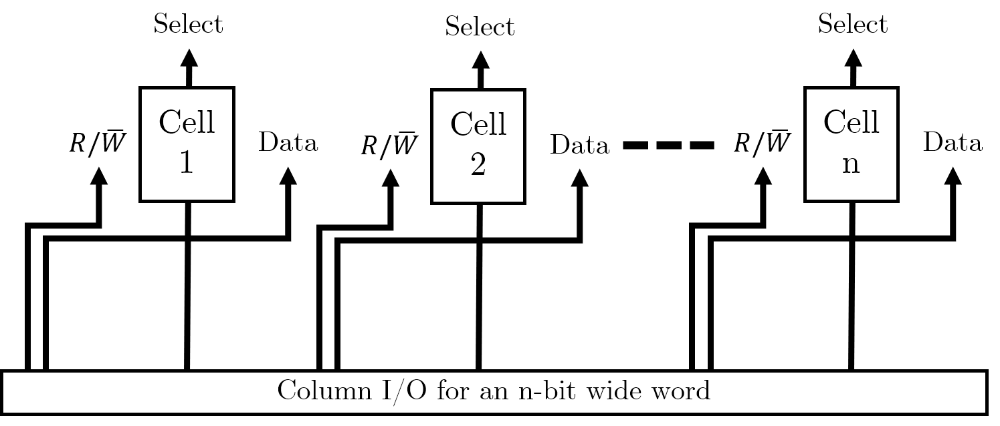

Memory hierarchy
When deciding on a memory technology, you must consider the following factors:
- Frequency of access
- Access time
- Capacity required
- Financial cost
The designer’s dilemma is the conflict that is caused by choosing between low cost, high capacity but slow access storage and high cost, low capacity, but fast access storage.
Ideally, we would want our storage access to be frequent, quick, and spatially efficient – the balance of these three leads to the cost of the storage.
The memory hierarchy is a way of addressing the designer’s dilemma to get the best out of each type of storage.
In practice, most programs exhibit locality, which our memory systems can take advantage of.
Temporal Locality – If a particular memory location is referenced, it is likely that the same location will be referenced again in the near future. Loops are excellent examples of temporal locality in programs.
Spatial Locality – If a particular memory location is referenced, it is likely that nearby memory locations will be referenced in the near future. Nearly every program exhibits spatial locality, because instructions are usually executed in sequence. Loops exhibit both temporal and spatial locality.
- Due to spatial locality, a reasonable assumption to make is that 90% of memory access is within ±2KB of the previous program counter location.
- Additionally, temporal locality states that these accessed memory locations are likely to be accessed again in the near future.
Thus, in such cases, data in these memory locations should be stored in memory that is as close to the CPU as possible (registers, cache, main store). However, this cannot be used for everything as it would incur a high manufacturing cost, and the total capacity would be limited. Data that is less frequently accessed should be stored in memory that is slower, higher capacity, and cheaper because the high speed of access is not needed.

Locality is not only a hardware feature – it is important for programmers to also write code which has ‘good locality’ – however, this is not typically a concern we have when writing higher level languages than assembly such as C or C++. I assume that the compiler will be optimising the code itself to ensure that the assembled code reflects these principles, as it leads to higher performance – if we have to keep accessing main store because we have exceeded the amount of cache available to us, or the information is not in higher levels of cache, then the access time can increase by orders of magnitude.
Cache Memory
Cache memory is a small amount (typically tens of kilobytes) of memory that can be built into the microprocessor or is very close to it, and can be accessed very quickly. Cache memory is used to store values in memory which are likely to be retrieved, so the read times are quicker than the main store.
- Cache is kept small to limit cost; it is also transparent to the programmer. However, this does allow some control over what is stored in it.
- A cache access is known as a ‘cache hit’.
- Cache speed is incredibly important – moving down the memory hierarchy will take orders of magnitude more time for similar memory hits.
Because of spatial locality, cache memory often prefetches the memory locations around the last PC memory location before it is needed, which means that in many cases the cache already has the memory needed, increasing read speeds of order of magnitudes as compared to fetching from the main store.
Due to temporal locality, the first time the processor reads from an address in main memory, a copy is stored in the cache. The next time the same address is needed, the copy in the cache can be used instead. So, commonly accessed data is stored in the faster cache memory.
Moore’s Law
Moore’s Law is focused on the transistor count within integrated circuits. It states that this count doubles roughly every two years.
Currently, single core frequency is tailing off; this has lead the industry to focus on multicore performance instead. Comparatively, memory access speed is improving much more slowly; access time and capacity can become a huge bottleneck when it comes to creating performant systems.
Note. Cache concepts are not fully included in these notes as they are not fully examined, and also do not feature in the revision videos. There are however several exam questions relating to cache which appear every year.
Memory Cell Organisation
Now that we’re familiar with different parts of the memory hierarchy, it’s crucial that we understand how this memory is actually constructed (down to the metal almost).
Semiconductor Memory (main store)
Semiconductor memory is the most common form of main store memory, otherwise known as RAM. It can be broken up into several groups:
- Static RAM (SRAM)
- SRAM uses a flip-flop as storage element for each bit.
- Dynamic RAM (DRAM)
- For each bit, the presence or absence of charge in a capacitor to determine a
1or0. - The capacitor charge leaks away over time, which requires periodic refreshing.
- DRAM is typically cheaper than SRAM which is why we accommodate for the higher overhead.
Refreshing DRAM incurs a constant overhead, which means that it does not increase per bit. This is because it is just a one-off cost for one group of DRAM cells.
- For each bit, the presence or absence of charge in a capacitor to determine a
Both SRAM and DRAM are volatile memory storage – therefore, power must continuously be applied to retain memory. Once power is removed, you cannot assume that the data is still stored. However, the similarities end there and it is crucial to recognise the differences between the two memory cells.
Always ask yourself about the cost of these memory technologies – it is the reason we have decided to use semiconductor memory as our main store.
| SRAM cells | DRAM cells |
|---|---|
| More complex – 5 to 6 transistors per cell | Simpler – usually just 1 transistor per cell |
| Provides better read/write times because of higher switching speeds. | Because it is simpler it is more compact, which allows for greater memory cell density. |
| Cache memory, both on and off chip, is implemented as SRAM | Cheaper to produce than equivalent SRAM memory, and hence is used for main memory |
DRAM can be organised even further:
- Synchronous DRAM (SDRAM)
- Rambus DRAM (RDRAM)
- Double Data Rate Synchronous (DDR SDRAM)
- Cache DRAM (CDRAM)
Organising memory
Memory cells
Before we begin organising memory, it’s useful to know what the individual memory cells will look like. Think of them as single boxes with the following properties:
- They only store two states (
1or0). - They are capable of being written to as well as read from. This is controlled by a \(R / \bar{W}\) line which determines which direction the information will flow from.
- They are enabled when a single pin, such as a
SELECTline, is powered.

You can think of a memory cell as a means of storing a single bit.
Storing single words
In order to store multiple bits together (i.e. words), we will simply store a series of memory cells next to each other. We will need some column selecting I/O to handle selecting the individual bits of the word correctly.

Storing multiple words
Now that we have organised individual words, we want to store multiple words in memory. We can use this grid arrangement to arrange the words in parallel as follows (imagine we wanted to store four of the 4-bit words shown above):

In our address decoder, we have \(log_{2} (W)\) many control pins, where \(W\) is the number of words we want to store in memory. (This is because each pin can be high or low, and hence refer to two distinct words). Address decoders are used to select a row of memory cells and the Column I/O specifies the exact cell to read or write to.
We want to maintain a square grid of cells. We could simply have a 16-bit word, which we partition into four individual words (it is possible to put smaller words into the registers of larger ones). However, this would require 16 data lines on the column selection IO, with each bit requiring power; this would be rather lopsided and would result in a column selector doing all the work. Maintaining a square grid means that we can balance the number of required pins across two different pieces of IO, each with their own power requirements.
We are trying to avoid long, narrow arrays when we design our memory cell arrays. We want to maximise space for memory cells and minimise space taken up by IO.
Detecting and Correcting Errors
Although this topic is within the memory systems lecture, it is fundamental to error detection on the whole and hence has its own section here.
Broadly speaking, there are two types of errors:
- Errors that occur within a system, e.g. in a memory system.
- Errors that occur in the communication between systems, e.g., in the transmission of messages or data between systems. This is what we will focus on.
Noise
- We typically send information through channels- when these channels become affected by unwanted information, they become noisy.
- Noise will arise from the physical properties of devices:
- Thermal noise
- Noise of electronic components
- Noise of transmission circuits
- Magnetic media will also have a “classic form of noise” due to the “random alignment of magnetic fields”.
Noise is always present. If it doesn’t come from the components themselves, it’ll come from external sources such as radiation. Noise is hence one of the limiting factors in computer systems.
In magnetic stores, when we have decreased area to store a bit, noise gets worse which increases the likelihood of errors.
Digital logic devices
We choose binary systems for our number systems as it provides us a high degree of noise immunity.
We also need to consider the tolerances of the components we use
Illustrating noise immunity, a trademarked Akram Analogy™
If you are comfortable with the idea of noise immunity and transistor-transistor logic voltage levels, you probably won’t need to read this.
To illustrate the first point, consider the following thought experiment:
- You and your friend have found a massive tunnel (assuming CS students step outdoors). The tunnel has water dripping and some other ambiguous sounds.
- You both stand at either end of the tunnel, and you realise now you want to say something to your friend. You have two choices:
- You can choose to simply clap your hands to get their attention (a binary communication system), OR
- You can choose to say a magic password that only they will respond to (a base-26 communication system).
Given the ambiguous sounds in the tunnel, which do you think your friend will be able to distinguish better? Would they be able to distinguish a clap above a specific volume? Or would they be able to distinguish the spoken magic password? How do you know when a sound is finally loud enough to constitute you communicating with one another?
This idea of a small window where we do not consider a signal high or low is widest when we use a binary system- if we had any more possible values, we would need to find even more ranges which we consider ‘nothing’ (i.e. neither 0 nor anything else).
Using binary means that we only focus on two logical values.
In the image below, you can see the illustrated example for the above analogy, with annotated TTL voltage levels for context.


There is a point at which if there is too much noise, i.e. a train suddenly passes through the tunnel, your clap will never be heard and is permanently lost- this is known as a loss/ collapse of immunity.
Detecting single errors
If we assume that errors occur at random due to noise, one could naively ask you to clap three times and hope that your friend hears majority of them- i.e., you could send the message several times and take a vote. However, this is a very expensive affair (you would get tired quickly).
We can make the further assumption that if the probability of one error is low, the probability of two errors close together is even lower. Using this knowledge, we can add a parity bit to the message which can summarise the property of the message. We can check that this property is intact to see whether the message has been altered; using a parity bit is typically cheaper and adequate in many situations.
Parity systems
There are many different types of parity systems, but the two main ones you should be focused on are the even parity and the odd parity system.
Each system will add an extra bit to the message which makes the number of logical 1’s even or odd depending on the system chosen.
| Non-parity message (7 bits) | Even parity bit added | Odd parity bit added |
|---|---|---|
100 0001 |
0100 0001 (two 1’s) |
1100 0001 (three 1s) |
It is possible to calculate the parity bit using hardware or software.
Finite automaton to calculate parity
The lecture slides contain a two-state finite automaton – this diagram shows how, for a message 110 travelling on an even parity system, we can use the automaton to reach a parity bit of 0, so the message to be sent is 0110.

Hardware to calculate parity
You can calculate the parity bit for a message by XORing each bit with one another. You can achieve this by connecting each pair of bits to an XOR gate; for an odd number of input bits, add a 0 for an even parity system and a 1 for an odd parity system.
Detecting multiple errors
In the real world, it is more likely that errors will appear in bursts.
Burst errors can be caused by number of reasons, including but not limited to network or communication dropouts for a few milliseconds.
In this scenario, there may be errors in multiple bits and single-bit parity will still hold. Therefore, we must move to checksums to check entire columns.
Bit-column parity
One way in which we can identify errors in multiple columns (i.e. multiple bits) is to use bit-column parity.
Take the message, Message, which is made up of seven 7-bit ASCII characters:
| Character | 7 Bits |
|---|---|
M |
100 1101 |
e |
110 0101 |
s |
111 0011 |
s |
111 0011 |
a |
111 0001 |
g |
111 0111 |
e |
111 0101 |
By arranging each column into its own message, we can then calculate a parity bit for each message:
| Column number | 7-bit column | Even parity bit |
|---|---|---|
| 1 | 111 1111 |
1 |
| 2 | 011 1111 |
0 |
| 3 | 001 1000 |
0 |
| 4 | 100 0000 |
1 |
| 5 | 110 0011 |
0 |
| 6 | 001 1010 |
1 |
| 7 | 111 1111 |
1 |
We can then take this column and turn it into a 7-bit message: 1001011 spells out ASCII K. Now, we can add K to the end of our original message, and send the final message MessageK.
This system will detect all burst errors of less than 14 bits; it will fail if an even number of errors occur in a bit-column (i.e., a message equal to 8 characters).
Error Correcting Codes: row and column parity
The above example only detects errors in columns- but it doesn’t stop us from using row correction at the exact same time. If we have both row parity and column parity, then we begin by checking if each column has correct parity. If we find a column with incorrect parity, we immediately begin going through the rows, and checking the parity of each row. If we find a mistake in a row as well, we simply need to invert the bit found in the column with an error. This ECC enables us to detect multiple errors and fix single errors.